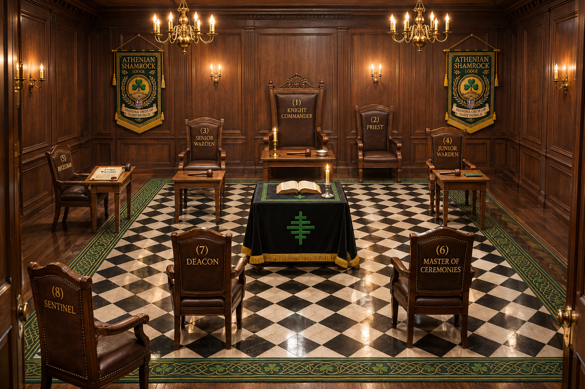

Select your chair to highlight your lines in the ritual.

Lodge officers
Station
Office
Name / assignment
1
Knight Commander
Paul Johnston
2
Priest
Paul Hollebone
3
Senior Warden
Ioannis Benetatos
4
Junior Warden
Tony Lewis
5
Registrar
Lodge Warrant Station
6
Master of Ceremonies
Simon Polkinghorne
7
Deacon
Dimitrios Skiadopoulos
8
Sentinel
Dimitrios Skiadopoulos
Chamber Equipment: Altar covered with an Altar Cloth bearing the Cross with five bars and the appropriate Volume of the Sacred Law. Candle and salt at the Knight Commander's station; Lodge Warrant at the Registrar's station; gavels for officers requiring them.
OPENING A LODGE OF SAINT PATRICKΑΝΟΙΓΜΑ ΚΑΤΑΣΚΕΥΗΣ ΑΓΙΟΥ ΠΑΤΡΙΚΟΥAPERTURA DE UNA LOGIA DE SAN PATRICIOOUVERTURE D'UNE LODGE SAINT PATRICK
Sir Knight CommanderSir Knight Commanderseñor caballero comandanteMonsieur Chevalier Commandant
Sir Knights, clothe yourselves, Officers take your stations.
Assist me to open this Lodge of the Order of Saint Patrick.
(All Rise).
Κύριε Knights, ντυθείτε, οι αξιωματικοί παίρνουν τους σταθμούς σας.
Βοηθήστε με να ανοίξω αυτή τη Στοά του Τάγματος του Αγίου Πατρικίου.
(All Rise).
Señores Caballeros, vístanse, los oficiales tomen sus puestos.
Ayúdame a abrir esta Logia de la Orden de San Patricio.
(Todos se levantan).
Messieurs les Chevaliers, habillez-vous, les officiers prennent vos postes.
Aidez-moi à ouvrir cette Loge de l'Ordre de Saint Patrick.
(Tous se lèvent).
Sir Knight Master of Ceremonies.Sir Knight Master of Ceremonies.Señor Caballero Maestro de Ceremonias.Sir Chevalier Maître de Cérémonie.
Are all present Sir Knights of the Order of Saint Patrick?
Είναι όλοι οι παρόντες Sir Knights of Order of Saint Patrick;
¿Están todos los presentes Señores Caballeros de la Orden de San Patricio?
Est-ce que tous sont présents Sir Chevaliers de l'Ordre de Saint Patrick ?
Sir Knight Master of CeremoniesSir Knight Master of CeremoniesSeñor Caballero Maestro de CeremoniasSir Knight Maître de Cérémonie
(After Visual Examination).
Sir Knight Commander, all present are Sir Knights of the Order of Saint Patrick and have the words of this Degree.
(Μετά από Οπτική Εξέταση).
Sir Knight Commander, όλοι οι παρόντες είναι Sir Knights του Τάγματος του Saint Patrick και έχουν τα λόγια αυτού του Βαθμού.
(Después del examen visual).
Señor Caballero Comandante, todos los presentes son Señores Caballeros de la Orden de San Patricio y tienen las palabras de este Grado.
(Après examen visuel).
Sir Knight Commander, tous présents sont Sir Knights de l'Ordre de Saint Patrick et portent les paroles de ce Diplôme.
Sir Knight CommanderSir Knight Commanderseñor caballero comandanteMonsieur Chevalier Commandant
What are the words?
Ποιες είναι οι λέξεις;
¿Cuales son las palabras?
Quels sont les mots ?
Sir Knight Master of CeremoniesSir Knight Master of CeremoniesSeñor Caballero Maestro de CeremoniasSir Knight Maître de Cérémonie
Follow Me.
Ακολούθησέ με.
Sígueme.
Suivez-moi.
Sir Knight CommanderSir Knight Commanderseñor caballero comandanteMonsieur Chevalier Commandant
Sir Knight Senior Warden.
What is the first care of every Knight of the Order of Saint Patrick?
Sir Knight Senior Warden.
Ποια είναι η πρώτη φροντίδα κάθε Ιππότη του Τάγματος του Αγίου Πατρικίου;
Señor Caballero Guardián Mayor.
¿Cuál es el primer cuidado de todo Caballero de la Orden de San Patricio?
Sir Knight, directeur principal.
Quel est le premier soin de tout Chevalier de l'Ordre de Saint Patrick ?
Sir Knight Senior WardenSir Knight Senior WardenSeñor Caballero Guardián MayorSir Knight, directeur principal
To see the Lodge is properly tiled.
Για να δείτε το Lodge είναι σωστά πλακάκι.
Para ver el Lodge está correctamente alicatado.
A voir le Lodge est dûment gardé.
Sir Knight CommanderSir Knight Commanderseñor caballero comandanteMonsieur Chevalier Commandant
Direct that duty to be done.
Κατευθύνετε αυτό το καθήκον να γίνει.
Dirige ese deber a cumplirse.
Ordonnez que ce devoir soit accompli.
Sir Knight Senior WardenSir Knight Senior WardenSeñor Caballero Guardián MayorSir Knight, directeur principal
Sir Knight Deacon, you will attend the door.
Κύριε Knight Deacon, θα παρευρεθείτε στην πόρτα.
Señor Caballero Diácono, atenderá la puerta.
Sir Chevalier Deacon, vous vous présenterez à la porte.
Sir Knight DeaconSir Knight DeaconSeñor Caballero DiáconoMonsieur Chevalier Diacre
(Goes to the door).
(Πηγαίνει στην πόρτα).
(Se acerca a la puerta).
(Il se dirige vers la porte).
Sir Knight SentinelΣερ Νάιτ ΣέντινελSeñor Caballero CentinelaSir Knight Sentinelle
(Responds).
(Απαντά).
(Responde).
(Répond).
Sir Knight DeaconSir Knight DeaconSeñor Caballero DiáconoMonsieur Chevalier Diacre
(Returns to his seat and remains standing).
Sir Knight Senior Warden, your order has been obeyed and we are properly tiled.
(Επιστρέφει στη θέση του και παραμένει όρθιος).
Sir Knight Senior Warden, η διαταγή σας τηρήθηκε και είμαστε κατάλληλα φυλασσόμενοι.
(Vuelve a su asiento y se queda de pie).
Señor Caballero Guardián Mayor, su orden ha sido obedecida y estamos debidamente resguardados.
(Retourne à sa place et reste debout).
Sir Knight Senior Warden, votre ordre a été obéi et nous sommes dûment gardés.
Sir Knight Senior WardenSir Knight Senior WardenSeñor Caballero Guardián MayorSir Knight, directeur principal
Sir Knight Commander your order has been obeyed and we are properly tiled.
Κύριε Knight Commander, η διαταγή σας τηρήθηκε και έχουμε πλακώσει σωστά.
Señor Caballero Comandante, su orden ha sido obedecida y estamos debidamente resguardados.
Sir Knight Commander, votre ordre a été obéi et nous sommes dûment gardés.
Sir Knight CommanderSir Knight Commanderseñor caballero comandanteMonsieur Chevalier Commandant
Sir Knight Priest attend the Altar.
(All adopt the Sign of Reverence).
Ο Sir Knight Priest παρευρίσκεται στο Βωμό.
(Όλοι υιοθετούν το Σημείο Ευλάβειας).
Sir Knight Priest asiste al Altar.
(Todos adoptan el Signo de Reverencia).
Sir Knight Priest assiste à l'autel.
(Tous adoptent le Signe de Révérence).
Sir Knight PriestSir Knight PriestSeñor Caballero SacerdoteMonsieur Chevalier Prêtre
(Proceeds to the Altar, opens the Bible at Psalms 23, kneels, gives the ‘Sign of Adoration’ and then says:)
May this undertaking contrived by Wisdom, be executed in Strength and adorned with Beauty, so that a Fellowship where Peace, Harmony and Brotherly Love shall perpetually reign.
(Rises and steps back. All discharge the Sign of Reverence).
(Προχωρεί στο Θυσιαστήριο, ανοίγει τη Βίβλο στον Ψαλμό 23, γονατίζει, δίνει το «Σήμα της Λατρείας» και μετά λέει:)
Είθε αυτό το εγχείρημα που επινοήθηκε από τη Σοφία, να εκτελεστεί με Δύναμη και να στολιστεί με Ομορφιά, έτσι ώστε μια Συντροφιά όπου η Ειρήνη, η Αρμονία και η Αδελφική Αγάπη θα βασιλεύουν διαρκώς.
(Σηκώνεται και υποχωρεί. Όλοι εκφορτίζουν το Σημείο Ευλάβειας).
(Se dirige al Altar, abre la Biblia en el Salmo 23, se arrodilla, hace la 'Señal de Adoración' y luego dice:)
Que esta empresa ideada por la Sabiduría, sea ejecutada con Fuerza y adornada con Belleza, para que reine perpetuamente una Comunidad donde reine perpetuamente la Paz, la Armonía y el Amor Fraternal.
(Se levanta y retrocede. Todos hacen el Signo de Reverencia).
(Il se dirige vers l'autel, ouvre la Bible au Psaume 23, s'agenouille, donne le « Signe d'adoration » puis dit :)
Que cette entreprise conçue par la Sagesse soit exécutée avec Force et parée de Beauté, afin qu'une Fraternité où règnent perpétuellement la Paix, l'Harmonie et l'Amour Fraternel.
(Il se lève et recule. Tous déchargent le signe de révérence).
Sir Knight CommanderSir Knight Commanderseñor caballero comandanteMonsieur Chevalier Commandant
Let us proceed with the Formation.
Ας προχωρήσουμε στον Σχηματισμό.
Procedamos con la Formación.
Passons à la Formation.
THE FORMATIONΟ ΣΧΗΜΑΤΙΣΜΟΣLA FORMACIÓNLA FORMATION
Sir Knight Priest remains to the west of the Altar, Sir Knight Commander stands to the east of the Altar, with Sir Knight Senior Warden to his immediate right and Sir Knight Junior Warden to his immediate left (facing west). Sir Knight Master of Ceremonies stands in the west to the immediate left of Sir Knight Priest and Sir Knight Deacon stands to the immediate right of Sir Knight Priest (facing east).
Ο Sir Knight Priest παραμένει στα δυτικά του Altar, ο Sir Knight Commander στέκεται στα ανατολικά του Altar, με τον Sir Knight Senior Warden στα αμέσως δεξιά του και τον Sir Knight Junior Warden στα αμέσως αριστερά του (με κατεύθυνση προς τα δυτικά). Ο Sir Knight Master of Ceremonies στέκεται στα δυτικά, αμέσως στα αριστερά του Sir Knight Priest και ο Sir Knight Deacon στέκεται αμέσως δεξιά του Sir Knight Priest (με κατεύθυνση προς τα ανατολικά).
Sir Knight Priest permanece al oeste del Altar, Sir Knight Commander se encuentra al este del Altar, con Sir Knight Senior Warden a su derecha inmediata y Sir Knight Junior Warden a su izquierda inmediata (mirando hacia el oeste). Sir Knight Master of Ceremonies se encuentra en el oeste, inmediatamente a la izquierda de Sir Knight Priest y Sir Knight Deacon se encuentra inmediatamente a la derecha de Sir Knight Priest (mirando hacia el este).
Sir Knight Priest reste à l'ouest de l'autel, Sir Knight Commander se tient à l'est de l'autel, avec Sir Knight Senior Warden à sa droite immédiate et Sir Knight Junior Warden à sa gauche immédiate (face à l'ouest). Sir Knight Master of Ceremonies se tient à l'ouest, immédiatement à gauche de Sir Knight Priest, et Sir Knight Deacon se tient immédiatement à droite de Sir Knight Priest (face à l'est).
Sir Knight CommanderSir Knight Commanderseñor caballero comandanteMonsieur Chevalier Commandant
Sir Knights, you will form a circle around the altar with the left hand on the right shoulder of the Knight on your left.
(All Sir Knights present now join the Lodge Officers to form a circle around the Altar with their left hand on the right shoulder of the Knight on their left. When formed the ceremony continues).
Κύριε Knights, θα σχηματίσετε έναν κύκλο γύρω από το βωμό με το αριστερό χέρι στον δεξιό ώμο του Ιππότη στον αριστερό σας.
(Όλοι οι παρόντες Sir Knights τώρα ενώνονται με τους Αξιωματικούς της Στοάς για να σχηματίσουν έναν κύκλο γύρω από τον Βωμό με το αριστερό τους χέρι στον δεξιό ώμο του Ιππότη στα αριστερά τους. Όταν σχηματιστεί η τελετή συνεχίζεται).
Señores Caballeros, formarán un círculo alrededor del altar con la mano izquierda en el hombro derecho del Caballero a su izquierda.
(Todos los Señores Caballeros presentes ahora se unen a los Oficiales de la Logia para formar un círculo alrededor del Altar con su mano izquierda en el hombro derecho del Caballero a su izquierda. Cuando se forma, la ceremonia continúa).
Messieurs les Chevaliers, vous formerez un cercle autour de l'autel avec la main gauche sur l'épaule droite du chevalier à votre gauche.
(Tous les Sir Knights présents rejoignent maintenant les Officiers de Loge pour former un cercle autour de l'Autel avec leur main gauche sur l'épaule droite du Chevalier à leur gauche. Une fois formés, la cérémonie continue).
Sir Knight PriestSir Knight PriestSeñor Caballero SacerdoteMonsieur Chevalier Prêtre
May this solemn chain bind us in the performance of our solemn obligations.
(All drop their hands to their side and stand straight).
Είθε αυτή η πανηγυρική αλυσίδα να μας δέσει στην εκτέλεση των επίσημων υποχρεώσεών μας.
(Όλοι ρίχνουν τα χέρια τους στο πλάι και στέκονται ίσια).
Que esta solemne cadena nos vincule en el cumplimiento de nuestras solemnes obligaciones.
(Todos dejan caer las manos a los costados y se mantienen erguidos).
Que cette chaîne solennelle nous lie dans l'accomplissement de nos obligations solennelles.
(Tous laissent tomber leurs mains sur le côté et se tiennent droits).
Sir Knight CommanderSir Knight Commanderseñor caballero comandanteMonsieur Chevalier Commandant
Officers you will prove your proficiency with the Battery.
(The Battery is given by stamping the right foot. After the Battery, each Officer states aloud the name of the Order).
Αξιωματικοί θα αποδείξετε την επάρκειά σας με την Μπαταρία.
(Η Μπαταρία δίνεται πατώντας το δεξί πόδι. Μετά τη Μπαταρία, κάθε Αξιωματικός δηλώνει φωναχτά το όνομα της Διαταγής).
Oficiales, demostrarán su competencia con la batería.
(La Batería se da dando un golpe con el pie derecho. Después de la Batería, cada Oficial dice en voz alta el nombre de la Orden).
Officiers, vous prouverez votre maîtrise de la batterie.
(La Batterie est donnée en tapant du pied droit. Après la Batterie, chaque Officier prononce à haute voix le nom de l'Ordre).
Sir Knight Master of CeremoniesSir Knight Master of CeremoniesSeñor Caballero Maestro de CeremoniasSir Knight Maître de Cérémonie
Sir Knight Senior WardenSir Knight Senior WardenSeñor Caballero Guardián MayorSir Knight, directeur principal
(7) Knight Masonry
Ιππότης Τεκτονισμός
Albañilería de caballeros
Chevalier Maçonnerie
Sir Knight CommanderSir Knight Commanderseñor caballero comandanteMonsieur Chevalier Commandant
(5) Order of Saint Patrick
🤫 (Following a short pause).
Τάγμα του Αγίου Πατρικίου
(Μετά από μια μικρή παύση).
Orden de San Patricio
(Tras una breve pausa).
Ordre de Saint Patrick
(Après une courte pause).
Sir Knight CommanderSir Knight Commanderseñor caballero comandanteMonsieur Chevalier Commandant
I now declare this Lodge of the Order of Saint Patrick properly tiled and duly open.
(He stamps his right foot, then each Sir Knight, commencing with Sir Knight Junior Warden, stamps once with his right foot continuing clockwise finishing with Sir Knight Senior Warden).
Δηλώνω τώρα αυτή τη Στοά του Τάγματος του Αγίου Πατρικίου κατάλληλα πλακωμένη και δεόντως ανοιχτή.
(Σφραγίζει το δεξί του πόδι, μετά κάθε Sir Knight, ξεκινώντας με τον Sir Knight Junior Warden, χτυπά μια φορά με το δεξί του πόδι συνεχίζοντας δεξιόστροφα τελειώνοντας με τον Sir Knight Senior Warden).
Declaro ahora esta Logia de la Orden de San Patricio debidamente embaldosada y debidamente abierta.
(Él golpea su pie derecho, luego cada Sir Knight, comenzando con Sir Knight Junior Warden, golpea una vez con su pie derecho continuando en el sentido de las agujas del reloj y terminando con Sir Knight Senior Warden).
Je déclare désormais cette Loge de l'Ordre de Saint Patrick bien carrelée et dûment ouverte.
(Il frappe du pied droit, puis chaque Sir Knight, en commençant par Sir Knight Junior Warden, frappe une fois avec son pied droit en continuant dans le sens des aiguilles d'une montre en terminant par Sir Knight Senior Warden).
Sir Knight CommanderSir Knight Commanderseñor caballero comandanteMonsieur Chevalier Commandant
Please be seated.
(All return to their stations and all sit).
Παρακαλώ καθίστε.
(Όλοι επιστρέφουν στους σταθμούς τους και όλοι κάθονται).
Por favor tomen asiento.
(Todos regresan a sus puestos y todos se sientan).
Veuillez vous asseoir.
(Tous retournent à leur poste et tous s'assoient).
THE PRESENTATIONΗ ΠΑΡΟΥΣΙΑΣΗLA PRESENTACIÓNLA PRÉSENTATION
Sir Knight CommanderSir Knight Commanderseñor caballero comandanteMonsieur Chevalier Commandant
Sir Knight Deacon (Deacon rises) you will present the Candidates.
Sir Knight Deacon (Deacon rises) θα παρουσιάσετε τους Υποψηφίους.
Señor Caballero Diácono (el diácono se levanta) presentará a los candidatos.
Sir Knight Deacon (Deacon se lève), vous présenterez les candidats.
Sir Knight DeaconSir Knight DeaconSeñor Caballero DiáconoMonsieur Chevalier Diacre
(Retires and then presents the Representative Candidate to the west of the Altar).
Sir Knight Commander, I have the pleasure of introducing Companion ---------- and others who have received the Degrees of Symbolic Masonry, are qualified by service, and now wish to be set aside in the Order of Saint Patrick with those members of vision and leadership.
(Αποσύρεται και στη συνέχεια παρουσιάζει τον Υποψήφιο Αντιπρόσωπο στα δυτικά του Βωμού).
Κύριε Knight Commander, έχω τη χαρά να σας συστήσω τον Σύντροφο ---------- και άλλους που έχουν λάβει τα πτυχία του Συμβολικού Τεκτονισμού, έχουν τα προσόντα της υπηρεσίας και τώρα επιθυμούν να παραμεριστούν στο Τάγμα του Αγίου Πατρικίου με αυτά τα μέλη του οράματος και της ηγεσίας.
(Se retira y luego presenta al Candidato a Representante al oeste del Altar).
Señor Caballero Comandante, tengo el placer de presentarle al Compañero ---------- y a otros que han recibido los Grados de Masonería Simbólica, están calificados por su servicio y ahora desean ser apartados en la Orden de San Patricio con aquellos miembros de visión y liderazgo.
(Il se retire puis présente le candidat représentatif à l'ouest de l'autel).
Sir Chevalier Commandeur, j'ai le plaisir de vous présenter Companion ---------- et d'autres qui ont reçu les degrés de maçonnerie symbolique, sont qualifiés par leur service et souhaitent maintenant être mis de côté dans l'Ordre de Saint Patrick avec ces membres de vision et de leadership.
Sir Knight CommanderSir Knight Commanderseñor caballero comandanteMonsieur Chevalier Commandant
The reactivation of the Order of Saint Patrick has a solemn purpose.
From the beginning of time, mankind has found a way to provide for his needs by using men of vision and leadership. In providing for those needs, he has either utilized his experiences of the past or invented a new instrument for his needs in the present and the future.
The purpose of the Order of Saint Patrick is to recognize those men who have provided vision and leadership; men who are the Salt of the Earth and Light of the World.
(Takes salt and pours it into a paper envelope and seals it).
Η επανενεργοποίηση του Τάγματος του Αγίου Πατρικίου έχει έναν πανηγυρικό σκοπό.
Από την αρχή του χρόνου, η ανθρωπότητα βρήκε έναν τρόπο να καλύψει τις ανάγκες του χρησιμοποιώντας ανθρώπους με όραμα και ηγεσία. Για να καλύψει αυτές τις ανάγκες, είτε έχει χρησιμοποιήσει τις εμπειρίες του από το παρελθόν είτε έχει εφεύρει ένα νέο εργαλείο για τις ανάγκες του στο παρόν και το μέλλον.
Ο σκοπός του Τάγματος του Αγίου Πατρικίου είναι να αναγνωρίσει εκείνους τους άνδρες που έχουν προσφέρει όραμα και ηγεσία. άνδρες που είναι το Αλάτι της Γης και το Φως του Κόσμου.
(Παίρνει αλάτι και το ρίχνει σε χάρτινο φάκελο και τον σφραγίζει).
La reactivación de la Orden de San Patricio tiene un propósito solemne.
Desde el principio de los tiempos, la humanidad ha encontrado una manera de satisfacer sus necesidades utilizando hombres con visión y liderazgo. Para satisfacer esas necesidades, ha utilizado sus experiencias del pasado o ha inventado un nuevo instrumento para sus necesidades presentes y futuras.
El propósito de la Orden de San Patricio es reconocer a aquellos hombres que han aportado visión y liderazgo; hombres que son la Sal de la Tierra y Luz del Mundo.
(Toma sal y la vierte en un sobre de papel y lo sella).
La réactivation de l'Ordre de Saint Patrick a un objectif solennel.
Depuis la nuit des temps, l’humanité a trouvé le moyen de subvenir à ses besoins en faisant appel à des hommes visionnaires et dirigeants. En pourvoyant à ces besoins, il a soit utilisé ses expériences du passé, soit inventé un nouvel instrument pour répondre à ses besoins présents et futurs.
Le but de l'Ordre de Saint Patrick est de reconnaître les hommes qui ont apporté une vision et un leadership ; des hommes qui sont le Sel de la Terre et la Lumière du Monde.
(Il prend du sel, le verse dans une enveloppe en papier et la scelle).
Sir Knight PriestSir Knight PriestSeñor Caballero SacerdoteMonsieur Chevalier Prêtre
We read in the Holy Scriptures where Our Lord has said:
“Ye are the Salt of the Earth; but if the Salt has lost its savour, wherewith shall it be Salted? It is thencefore good for nothing but to be cast out and to be trodden under the foot of men”.
(Knight Commander places the envelope on the floor for all to see and stamps on it).
“Ye are the Light of the Earth. A city that is set on a hill cannot be hid. Neither do men light a candle and put it under a bushel, but on a candlestick; and giveth light unto all that are in the house”.
(Knight Commander lights the candle it).
“Let your light so shine before men, that they may see your good works and glorify your Father which is in Heaven”.
Διαβάζουμε στις Αγίες Γραφές όπου ο Κύριός μας είπε:
«Εσείς είστε το Αλάτι της Γης· αλλά αν το Αλάτι έχει χάσει τη γεύση του, με ποιον τρόπο θα αλατιστεί; Δεν είναι λοιπόν καλό παρά να το πετάξουν έξω και να το πατήσουν κάτω από τα πόδια των ανθρώπων».
(Ο Knight Commander τοποθετεί τον φάκελο στο πάτωμα για να τον δουν όλοι και τον σφραγίζει).
"Εσείς είστε το φως της γης. Μια πόλη που βρίσκεται σε λόφο δεν μπορεί να κρυφτεί. Ούτε οι άνθρωποι ανάβουν ένα κερί και το βάζουν κάτω από μια θήκη, αλλά σε ένα κηροπήγιο και φωτίζει όλους όσους είναι στο σπίτι".
(Ο Ιππότης Διοικητής ανάβει το κερί).
«Ας λάμψει το φως σας μπροστά στους ανθρώπους, για να δουν τα καλά σας έργα και να δοξάσουν τον Πατέρα σας που είναι στους Ουρανούς».
Leemos en las Sagradas Escrituras donde Nuestro Señor ha dicho:
"Vosotros sois la sal de la tierra; pero si la sal ha perdido su sabor, ¿con qué será salada? Por tanto, no sirve para nada más que para ser arrojada fuera y hollada por los hombres".
(Knight Commander coloca el sobre en el suelo para que todos lo vean y lo sella).
"Vosotros sois la luz de la tierra. Una ciudad asentada sobre un monte no se puede esconder. Ni se enciende una lámpara y se pone debajo de un almud, sino sobre un candelero, y alumbra a todos los que están en casa".
(Knight Commander enciende la vela).
“Así alumbre vuestra luz delante de los hombres, para que vean vuestras buenas obras y glorifiquen a vuestro Padre que está en los cielos”.
Nous lisons dans les Saintes Écritures où Notre Seigneur a dit :
"Vous êtes le sel de la terre ; mais si le sel a perdu sa saveur, avec quoi sera-t-il salé ? Il ne sert donc à rien d'autre qu'à être jeté dehors et foulé aux pieds des hommes".
(Knight Commander place l'enveloppe sur le sol à la vue de tous et la tamponne).
"Vous êtes la Lumière de la Terre. Une ville située sur une colline ne peut être cachée. Les hommes n'allument pas non plus une bougie et ne la mettent pas sous le boisseau, mais sur un chandelier et éclairent tous ceux qui sont dans la maison".
(Le Chevalier Commandant allume la bougie).
« Que votre lumière brille ainsi devant les hommes, afin qu'ils voient vos bonnes œuvres et glorifient votre Père qui est aux cieux ».
THE HISTORYΗ ΙΣΤΟΡΙΑLA HISTORIAL'HISTOIRE
Sir Knight Senior WardenSir Knight Senior WardenSeñor Caballero Guardián MayorSir Knight, directeur principal
(Rises and steps to the east of Altar facing the Candidate).
The Masonic Order of Saint Patrick was established as a means of recognizing the vision and leadership of those few preeminent and exceptional brethren, of providing a closer bond of fellowship, of teaching anew the finest philosophy the world has ever known, and of pointing out the importance of using your Salt of Service in life as a Beacon of Light to men.
The original Order of Saint Patrick was Instituted by King George III of England in the year 1783, for the valuable assistance rendered him by the courageous Knights of Erie. This Order was Christian in nature and the symbol of Ireland was adopted as the Jewel of the Order. Saint Patrick, being held in high veneration, was made the patron Saint, his life being one of service to God and his fellowmen.
Saint Patrick, in his aspirations to teach the Oneness of the Triune God, used the Shamrock because of its natural formation, to show that God is three persons in one – Father, Son and Holy Ghost. He spent his early boyhood as a shepherd and during this period, much of his time was spent in prayer. As he prayed faithfully, the Great Commandment became clear to him and became a dominant part of his future life and service.
(Gives Sign of Reverence).
“Love thy Lord, thy God, with all thy heart and thy neighbor as thyself”.
(Drops sign and returns to his place and sits).
(Ανεβαίνει και βαδίζει ανατολικά του Βωμού με όψη προς τον Υποψήφιο).
Το Τεκτονικό Τάγμα του Αγίου Πατρικίου καθιερώθηκε ως μέσο αναγνώρισης του οράματος και της ηγεσίας αυτών των λίγων επιφανών και εξαιρετικών αδελφών, παροχής στενότερου δεσμού συναναστροφής, διδασκαλίας εκ νέου της καλύτερης φιλοσοφίας που γνώρισε ποτέ ο κόσμος και επισήμανσης της σημασίας της χρήσης του Αλατιού της Υπηρεσίας σας στη ζωή ως Φάρος Φωτός στους ανθρώπους.
Το αρχικό Τάγμα του Αγίου Πατρικίου ιδρύθηκε από τον Βασιλιά Γεώργιο Γ' της Αγγλίας το έτος 1783, για την πολύτιμη βοήθεια που του παρείχαν οι θαρραλέοι Ιππότες του Έρι. Αυτό το Τάγμα είχε χριστιανικό χαρακτήρα και το σύμβολο της Ιρλανδίας υιοθετήθηκε ως το κόσμημα του Τάγματος. Ο Άγιος Πατρίκιος, που τιμάται με υψηλή σεβασμό, έγινε προστάτης Άγιος, με τη ζωή του να είναι μια ζωή υπηρεσίας προς τον Θεό και τους συνανθρώπους του.
Ο Άγιος Πατρίκιος, στις φιλοδοξίες του να διδάξει την Ενότητα του Τριαδικού Θεού, χρησιμοποίησε το Τριφύλλι λόγω του φυσικού του σχηματισμού, για να δείξει ότι ο Θεός είναι τρία πρόσωπα σε ένα – Πατέρας, Υιός και Άγιο Πνεύμα. Πέρασε τα πρώτα παιδικά του χρόνια ως βοσκός και κατά τη διάρκεια αυτής της περιόδου, μεγάλο μέρος του χρόνου του περνούσε στην προσευχή. Καθώς προσευχόταν πιστά, η Μεγάλη Εντολή έγινε σαφής σε αυτόν και έγινε κυρίαρχο μέρος της μελλοντικής ζωής και της υπηρεσίας του.
(Δίνει σημάδι ευλάβειας).
«Αγάπα τον Κύριό σου, τον Θεό σου, με όλη σου την καρδιά και τον πλησίον σου όπως τον εαυτό σου».
(Πέφτει το σημάδι και επιστρέφει στη θέση του και κάθεται).
(Se levanta y camina hacia el este del Altar de cara al Candidato).
La Orden Masónica de San Patricio se estableció como un medio para reconocer la visión y el liderazgo de esos pocos hermanos preeminentes y excepcionales, para proporcionar un vínculo más estrecho de compañerismo, para enseñar de nuevo la mejor filosofía que el mundo haya conocido jamás y para señalar la importancia de utilizar su Sal de Servicio en la vida como un Faro de Luz para los hombres.
La Orden de San Patricio original fue instituida por el rey Jorge III de Inglaterra en el año 1783, por la valiosa ayuda que le prestaron los valientes Caballeros de Erie. Esta Orden era de naturaleza cristiana y el símbolo de Irlanda fue adoptado como Joya de la Orden. San Patricio, muy venerado, fue nombrado santo patrón y su vida fue de servicio a Dios y a sus semejantes.
San Patricio, en sus aspiraciones de enseñar la Unidad del Dios Triuno, usó el Trébol debido a su formación natural, para mostrar que Dios es tres personas en una: Padre, Hijo y Espíritu Santo. Pasó su niñez como pastor y durante este período, gran parte de su tiempo lo dedicó a la oración. Mientras oraba fielmente, el Gran Mandamiento se le hizo claro y se convirtió en una parte dominante de su vida y servicio futuros.
(Da señal de reverencia).
“Ama a tu Señor, a tu Dios, con todo tu corazón y a tu prójimo como a ti mismo”.
(Suelta el cartel y regresa a su lugar y se sienta).
(Se lève et marche à l'est de l'autel face au candidat).
L'Ordre maçonnique de Saint Patrick a été créé dans le but de reconnaître la vision et le leadership de ces quelques frères prééminents et exceptionnels, d'établir un lien de camaraderie plus étroit, d'enseigner à nouveau la plus belle philosophie que le monde ait jamais connue et de souligner l'importance d'utiliser votre sel de service dans la vie comme un phare de lumière pour les hommes.
L'Ordre original de Saint Patrick a été institué par le roi George III d'Angleterre en 1783, pour l'aide précieuse que lui ont apportée les courageux Chevaliers d'Érié. Cet Ordre était de nature chrétienne et le symbole de l'Irlande a été adopté comme joyau de l'Ordre. Saint Patrick, tenu en haute vénération, est devenu le saint patron, sa vie étant au service de Dieu et de ses semblables.
Saint Patrick, dans ses aspirations à enseigner l'unité du Dieu Trinitaire, a utilisé le trèfle en raison de sa formation naturelle, pour montrer que Dieu est trois personnes en une : Père, Fils et Saint-Esprit. Il a passé sa petite enfance comme berger et pendant cette période, une grande partie de son temps était consacrée à la prière. Alors qu’il priait fidèlement, le Grand Commandement lui devint clair et devint une partie dominante de sa vie et de son service futurs.
(donne un signe de révérence).
« Aime ton Seigneur, ton Dieu, de tout ton cœur et ton prochain comme toi-même ».
(Il laisse tomber le panneau, retourne à sa place et s'assoit).
(Rises and steps to the east of Altar facing the Candidate).
This Honor is intended to impress upon you the importance of making this Great Commandment a dominant part of your life.
In the latter days of his life Saint Patrick wrote these words which seem to summarize his entire life:
“Daily I expect either a violent death or to be robbed and reduced to slavery or the occurrence of some such calamity. I have cast myself into the hands of God, for He rules everything”.
This was apparently the secret of the inexhaustible courage and determination that prevailed throughout his life. Hence, God and Service became the theme of this Order, which has lain dormant these many years, and takes life into the twenty-first Century.
(Returns to place and sits).
(Ανεβαίνει και βαδίζει ανατολικά του Βωμού με όψη προς τον Υποψήφιο).
Αυτή η Τιμή έχει σκοπό να σας αποτυπώσει τη σημασία του να κάνετε αυτή τη Μεγάλη Εντολή κυρίαρχο μέρος της ζωής σας.
Τις τελευταίες μέρες της ζωής του ο Άγιος Πάτρικ έγραψε αυτά τα λόγια που φαίνεται να συνοψίζουν ολόκληρη τη ζωή του:
"Καθημερινά περιμένω είτε έναν βίαιο θάνατο είτε να με ληστέψουν και να μείνουν σε σκλαβιά ή να συμβεί κάποια τέτοια συμφορά. Έχω παραδοθεί στα χέρια του Θεού, γιατί Αυτός κυβερνά τα πάντα".
Αυτό ήταν προφανώς το μυστικό του ανεξάντλητου θάρρους και της αποφασιστικότητας που κυριάρχησε σε όλη του τη ζωή. Ως εκ τούτου, ο Θεός και η υπηρεσία έγιναν το θέμα αυτού του Τάγματος, το οποίο παρέμεινε αδρανές αυτά τα πολλά χρόνια, και μεταφέρει τη ζωή στον εικοστό πρώτο Αιώνα.
(Επιστρέφει στη θέση και κάθεται).
(Se levanta y camina hacia el este del Altar de cara al Candidato).
Este Honor tiene como objetivo inculcarle la importancia de hacer de este Gran Mandamiento una parte dominante de su vida.
En los últimos días de su vida San Patricio escribió estas palabras que parecen resumir toda su vida:
"Diariamente espero una muerte violenta o que me roben y me reduzcan a la esclavitud o que ocurra alguna calamidad semejante. Me he arrojado en manos de Dios, porque Él lo gobierna todo".
Éste fue aparentemente el secreto del coraje y la determinación inagotables que prevalecieron durante toda su vida. Por lo tanto, Dios y el Servicio se convirtieron en el tema de esta Orden, que ha permanecido dormida durante muchos años y que cobra vida en el siglo XXI.
(Vuelve a su lugar y se sienta).
(Se lève et marche à l'est de l'autel face au candidat).
Cet Honneur est destiné à vous faire comprendre l’importance de faire de ce Grand Commandement une partie dominante de votre vie.
Dans les derniers jours de sa vie, saint Patrick écrivit ces mots qui semblent résumer toute sa vie :
"Chaque jour, je m'attends soit à une mort violente, soit à un vol et à une réduction en esclavage, soit à l'apparition d'une telle calamité. Je me suis jeté entre les mains de Dieu, car Il gouverne tout".
C'était apparemment le secret du courage et de la détermination inépuisables qui ont prévalu tout au long de sa vie. Ainsi, Dieu et le Service sont devenus le thème de cet Ordre, resté en sommeil pendant de nombreuses années, et qui prend vie au XXIe siècle.
(Retourne à sa place et s'assoit).
THE PSALTERΤΟ ΨΑΛΤΡΟEL SALTERIOLE PSAUTIER
Sir Knight CommanderSir Knight Commanderseñor caballero comandanteMonsieur Chevalier Commandant
(Rises at his place).
Our Emblem is a Cross with Five Bars, symbolizing our Lord in the Lodge, Chapter, our various bodies of Erie and Knight Masonry and the Order of Saint Patrick.
(Σηκώνεται στη θέση του).
Το έμβλημά μας είναι ένας Σταυρός με πέντε ράβδους, που συμβολίζει τον Κύριό μας στη Στοά, το Κεφάλαιο, τα διάφορα σώματά μας του Έρι και του Ιππότη Τεκτονισμού και το Τάγμα του Αγίου Πατρικίου.
(Se levanta en su lugar).
Nuestro Emblema es una Cruz con Cinco Barras, que simboliza a nuestro Señor en la Logia, el Capítulo, nuestros diversos cuerpos de Erie y la Masonería de Caballeros y la Orden de San Patricio.
(Il se lève à sa place).
Notre emblème est une croix à cinq barres, symbolisant notre Seigneur dans la Loge, le Chapitre, nos différents corps de maçonnerie d'Érié et de Chevalier et l'Ordre de Saint Patrick.
Sir Knight PriestSir Knight PriestSeñor Caballero SacerdoteMonsieur Chevalier Prêtre
(Rises at his place).
Sir Knights Arise and join with me in repeating our Psalter, the 23rd Psalm:
(All rise and all repeat).
“The Lord is my shepherd; I shall not want. He maketh me to lie down in green pastures. He leadeth me besides still waters. He restoreth my soul. He leadeth me in the paths of righteousness for His Names sake. Yea, though I walk through the Valley of the Shadow of Death, I will fear no evil, for thou art with me. Thy Rod and Thy Staff, they comfort me. Thou preparest a table before me in the presence of mine enemies. Thou annoinest my head with oil. My cup runneth over. Surely goodness and mercy shall follow me all the days of my life and I will dwell in the House of the Lord forever”.
(All sit except for the Candidate).
(Σηκώνεται στη θέση του).
Sir Knights σηκωθείτε και ελάτε μαζί μου στην επανάληψη του Ψαλτηρίου μας, του 23ου Ψαλμού:
(Όλοι ανεβαίνουν και όλοι επαναλαμβάνονται).
"Ο Κύριος είναι ο βοσκός μου, δεν θέλω. Με βάζει να ξαπλώνω σε καταπράσινα λιβάδια. Με οδηγεί εκτός από γαλήνια νερά. Αποκαθιστά την ψυχή μου. Με οδηγεί στα μονοπάτια της δικαιοσύνης για χάρη των ονομάτων Του. Ετοίμασε ένα τραπέζι μπροστά μου ενώπιον των εχθρών μου, αλείφεις το κεφάλι μου με λάδι.
(Όλοι κάθονται εκτός από τον Υποψήφιο).
(Se levanta en su lugar).
Señores Caballeros, levántense y únanse a mí para repetir nuestro Salterio, el Salmo 23:
(Todos se levantan y todos repiten).
"El Señor es mi pastor; nada me faltará. En verdes pastos me hace descansar. Junto a aguas tranquilas me guía. Él restaura mi alma. Él me guía por sendas de justicia por amor de Su Nombre. Sí, aunque camine por el valle de sombra de muerte, no temeré mal alguno, porque tú estás conmigo. Tu vara y tu cayado me consuelan. Preparas una mesa delante de mí en presencia de mis enemigos. Ungirás mi cabeza con aceite. Mi copa rebosará. Ciertamente el bien y la misericordia me seguirán todos los días de mi vida y habitaré en la Casa del Señor para siempre”.
(Todos se sientan excepto el Candidato).
(Il se lève à sa place).
Messieurs les Chevaliers, levez-vous et joignez-vous à moi pour répéter notre Psautier, le 23ème Psaume :
(Tous se lèvent et tous répètent).
"Le Seigneur est mon berger ; je ne manquerai de rien. Il me fait reposer dans de verts pâturages. Il me conduit au bord des eaux calmes. Il restaure mon âme. Il me conduit dans les sentiers de la justice à cause de son nom. Oui, même si je marche dans la vallée de l'ombre de la mort, je ne crains aucun mal, car tu es avec moi. Ta verge et ton bâton me réconfortent. Tu prépares une table devant moi en présence de mes ennemis. Tu annoins ma tête est remplie d'huile. Ma coupe déborde. Assurément, la bonté et la miséricorde m'accompagneront tous les jours de ma vie et j'habiterai pour toujours dans la Maison du Seigneur.
(Tous siègent sauf le candidat).
THE AFFIRMATIONΗ ΕΠΙΒΕΒΑΙΩΣΗLA AFIRMACIÓNL'AFFIRMATION
Sir Knight Senior WardenSir Knight Senior WardenSeñor Caballero Guardián MayorSir Knight, directeur principal
(Rises and steps to the east of Altar facing the Candidate).
For our Affirmation, repeat after me;
We believe that God loves us like a father,
that he hears our prayers,
gives food to the hungry,
strength to the weak,
comfort to the sorrowful,
light to those in darkness,
and forgiveness to the penitent.
We believe in loving our neighbor as ourselves,
and in doing to others as we would be done by,
as well as helping those in distress.
We believe that God looks upon kindness.
as a personal favor to himself.
We believe that service to others.
gives the truest happiness,
and that service is the measure of greatness.
We believe in the forgiveness of injuries.
We believe that love and peace.
will finally prevail on Earth,
and we look for Eternal Life after death.
Amen, Amen, Amen.
(Senior Warden returns to place and sits).
(Ανεβαίνει και βαδίζει ανατολικά του Βωμού με όψη προς τον Υποψήφιο).
Για την επιβεβαίωσή μας, επαναλάβετε μετά από μένα.
Πιστεύουμε ότι ο Θεός μας αγαπά σαν πατέρα,
ότι ακούει τις προσευχές μας,
δίνει τροφή στους πεινασμένους,
δύναμη στους αδύναμους,
παρηγοριά στους θλιμμένους,
φως σε όσους βρίσκονται στο σκοτάδι,
και συγχώρεση στον μετανοούντα.
Πιστεύουμε στο να αγαπάμε τον πλησίον μας όπως τον εαυτό μας,
και να κάνουμε στους άλλους όπως θα κάναμε εμείς,
καθώς και βοηθώντας όσους βρίσκονται σε στενοχώρια.
Πιστεύουμε ότι ο Θεός κοιτάζει την καλοσύνη.
ως προσωπική χάρη στον εαυτό του.
Πιστεύουμε ότι η υπηρεσία σε άλλους.
δίνει την πιο αληθινή ευτυχία,
και ότι η υπηρεσία είναι το μέτρο του μεγαλείου.
Πιστεύουμε στη συγχώρεση των τραυματισμών.
Πιστεύουμε ότι η αγάπη και η ειρήνη.
θα επικρατήσει επιτέλους στη Γη,
και αναζητούμε την Αιώνια Ζωή μετά θάνατον.
Αμήν, Αμήν, Αμήν.
(Ο Senior Warden επιστρέφει στη θέση του και κάθεται).
(Se levanta y camina hacia el este del Altar de cara al Candidato).
Para nuestra Afirmación, repite conmigo;
Creemos que Dios nos ama como un padre,
que escuche nuestras oraciones,
da de comer al hambriento,
fuerza a los débiles,
consuelo a los afligidos,
luz para los que están en la oscuridad,
y perdón al penitente.
Creemos en amar a nuestro prójimo como a nosotros mismos,
y al hacer a los demás lo que nos harían a nosotros,
además de ayudar a quienes se encuentran en apuros.
Creemos que Dios mira la bondad.
como un favor personal para sí mismo.
Creemos en ese servicio a los demás.
da la verdadera felicidad,
y ese servicio es la medida de la grandeza.
Creemos en el perdón de las heridas.
Creemos que el amor y la paz.
finalmente prevalecerá en la Tierra,
y buscamos la Vida Eterna después de la muerte.
Amén, Amén, Amén.
(El Guardián Mayor regresa a su lugar y se sienta).
(Se lève et marche à l'est de l'autel face au candidat).
Pour notre Affirmation, répétez après moi ;
Nous croyons que Dieu nous aime comme un père,
qu'il entend nos prières,
donne à manger à ceux qui ont faim,
la force aux faibles,
réconfort aux affligés,
lumière pour ceux qui sont dans les ténèbres,
et le pardon au pénitent.
Nous croyons qu'il faut aimer notre prochain comme nous-mêmes,
et en faisant aux autres ce que nous serions faits par,
ainsi que d'aider les personnes en détresse.
Nous croyons que Dieu considère la gentillesse.
comme une faveur personnelle pour lui-même.
Nous croyons au service des autres.
donne le vrai bonheur,
et ce service est la mesure de la grandeur.
Nous croyons au pardon des blessures.
Nous croyons à l'amour et à la paix.
prévaudra enfin sur Terre,
et nous recherchons la Vie Eternelle après la mort.
Amen, Amen, Amen.
(Le directeur principal revient à sa place et s'assoit).
THE OBLIGATIONΗ ΥΠΟΧΡΕΩΣΗLA OBLIGACIÓNL'OBLIGATION
Sir Knight CommanderSir Knight Commanderseñor caballero comandanteMonsieur Chevalier Commandant
(Rises at his place).
Each Candidate will place his right hand over his heart, say “I” pronounce his name and repeat after me the Solemn Obligation:
Of my own free will, and accord, in the presence of the Grand Architect of the Universe, who is not dead and shall never die, and before these dedicated Knights assembled, faithful guardians of the Scared Treasure, do solemnly on my Sacred Honor, affirm my belief in the Supreme Being, Father, Son and Holy Ghost and pledge my unrelenting efforts to observe the Solemnity of His Laws.
I further vow, that I shall practice, as far as in my power lies, His Great Commandment, to love Him and to love my Brother, even as he loves me.
I shall seek Divine Approbation on March 17th of each year by visiting the Church of my choice and offering up devotions on behalf of my Brothers.
May the Father of us all bless our endeavors.
Amen. Amen. Amen.
You may be seated.
(All sit including the Sir Knight Commander).
(Σηκώνεται στη θέση του).
Κάθε Υποψήφιος θα τοποθετήσει το δεξί του χέρι πάνω από την καρδιά του, θα πει «Εγώ» προφέρω το όνομά του και θα επαναλάβει μετά από μένα την Επίσημη Υποχρέωση:
Με τη δική μου ελεύθερη βούληση, και με τη θέλησή μου, παρουσία του Μεγάλου Αρχιτέκτονα του Σύμπαντος, ο οποίος δεν είναι νεκρός και δεν θα πεθάνει ποτέ, και πριν από αυτούς τους αφιερωμένους Ιππότες συγκεντρωμένους, πιστοί φύλακες του Φοβισμένου Θησαυρού, κάνουν επίσημα την Ιερή μου Τιμή, επιβεβαιώνω την πίστη μου στο Υπέρτατο Όν, τον Πατέρα, τον Υιό και την Παναγία Προσπάθειά Του να παρατηρήσω το ασυγκίνητο και άγιο Πνεύμα μου. Νόμοι.
Περαιτέρω ορκίζομαι ότι θα ασκήσω, στο μέτρο που βρίσκεται στη δύναμή μου, τη Μεγάλη Εντολή Του, να Τον αγαπώ και να αγαπώ τον Αδελφό μου, όπως κι εκείνος αγαπά εμένα.
Θα επιδιώκω τη Θεία Επιδοκιμασία στις 17 Μαρτίου κάθε έτους επισκεπτόμενος την Εκκλησία της επιλογής μου και προσφέροντας αφιερώσεις εκ μέρους των Αδελφών μου.
Είθε ο Πατέρας όλων μας να ευλογεί τις προσπάθειές μας.
Αμήν. Αμήν. Αμήν.
Μπορεί να καθίσετε.
(Όλοι κάθονται συμπεριλαμβανομένου του Sir Knight Commander).
(Se levanta en su lugar).
Cada Candidato colocará su mano derecha sobre su corazón, dirá “Yo”, pronunciará su nombre y repetirá detrás de mí la Obligación Solemne:
Por mi propia voluntad y acuerdo, en presencia del Gran Arquitecto del Universo, que no está muerto y nunca morirá, y ante estos dedicados Caballeros reunidos, fieles guardianes del Tesoro Asustado, solemnemente en mi Sagrado Honor, afirmo mi creencia en el Ser Supremo, Padre, Hijo y Espíritu Santo y prometo mis incansables esfuerzos para observar la Solemnidad de Sus Leyes.
Además, prometo que practicaré, hasta donde esté en mi poder, Su Gran Mandamiento: amarlo a Él y a mi Hermano, así como él me ama a mí.
Buscaré la Aprobación Divina el 17 de marzo de cada año visitando la Iglesia de mi elección y ofreciendo devociones en nombre de mis Hermanos.
Que el Padre de todos nosotros bendiga nuestros esfuerzos.
Amén. Amén. Amén.
Puede que esté sentado.
(Todos se sientan, incluido el Sir Knight Commander).
(Il se lève à sa place).
Chaque Candidat placera sa main droite sur son cœur, dira « Je », prononcera son nom et répétera après moi l'Obligation Solennelle :
De mon plein gré et de mon plein gré, en présence du Grand Architecte de l'Univers, qui n'est pas mort et ne mourra jamais, et devant ces Chevaliers dévoués rassemblés, fidèles gardiens du Trésor Effrayé, faites solennellement sur mon Honneur Sacré, affirmez ma croyance en l'Être Suprême, Père, Fils et Saint-Esprit et engagez mes efforts incessants pour observer la solennité de ses lois.
Je fais en outre le vœu de mettre en pratique, autant que je le peux, son grand commandement, de l'aimer et d'aimer mon frère, comme il m'aime.
Je demanderai l'approbation divine le 17 mars de chaque année en visitant l'église de mon choix et en offrant des dévotions au nom de mes frères.
Que notre Père à tous bénisse nos efforts.
Amen. Amen. Amen.
Vous pouvez vous asseoir.
(Tous sont assis, y compris le Sir Knight Commander).
THE MEANS OF RECOGNITIONΤΑ ΜΕΣΑ ΑΝΑΓΝΩΡΙΣΗΣLOS MEDIOS DE RECONOCIMIENTOLES MOYENS DE RECONNAISSANCE
(Rises and steps to the east of Altar facing the Candidate).
The Sign of Adoration is made in this manner:
Thus saith the Lord: “I have sworn of myself, the word has gone out of my mouth in righteousness and shall return”.
(Kneels).
“That I will lift up mine eyes unto the hills from whence cometh my help; my help cometh from the Lord which made Heaven and Earth”.
(Raises his eyes and folds hands in prayer position, holds position for a moment then rises).
This, my Brothers, is the Sign of a Knight of the Order of Saint Patrick.
(He extends right arm horizontally and brings the right hand to the shoulder).
And these are the words “Follow Me”.
(Junior Warden returns to place and sits).
(Ανεβαίνει και βαδίζει ανατολικά του Βωμού με όψη προς τον Υποψήφιο).
Το σημάδι της λατρείας γίνεται με αυτόν τον τρόπο:
Έτσι λέει ο Κύριος: «Ορκίστηκα στον εαυτό μου, ο λόγος βγήκε από το στόμα μου με δικαιοσύνη και θα επιστρέψει».
(Γονατίζει).
«Ότι θα σηκώσω τα μάτια μου στους λόφους από όπου έρχεται η βοήθειά μου· η βοήθειά μου έρχεται από τον Κύριο που έκανε τον ουρανό και τη γη».
(Σηκώνει τα μάτια του και διπλώνει τα χέρια σε στάση προσευχής, κρατά τη θέση του για μια στιγμή και μετά σηκώνεται).
Αυτό, αδέρφια μου, είναι το σημάδι ενός Ιππότη του Τάγματος του Αγίου Πατρικίου.
(Απλώνει το δεξί χέρι οριζόντια και φέρνει το δεξί χέρι στον ώμο).
Και αυτές είναι οι λέξεις «Ακολούθησέ με».
(Ο Junior Warden επιστρέφει στη θέση του και κάθεται).
(Se levanta y camina hacia el este del Altar de cara al Candidato).
La Señal de Adoración se hace de esta manera:
Así dice el Señor: “He jurado por mí mismo, la palabra ha salido de mi boca en justicia y volverá”.
(Se arrodilla).
“Que alzaré mis ojos a los collados de donde viene mi socorro; mi socorro viene del Señor que hizo los cielos y la tierra”.
(Levanta los ojos y cruza las manos en posición de oración, mantiene la posición por un momento y luego se levanta).
Éste, hermanos míos, es el Signo de un Caballero de la Orden de San Patricio.
(Extiende el brazo derecho horizontalmente y lleva la mano derecha al hombro).
Y estas son las palabras "Sígueme".
(El Junior Warden regresa a su lugar y se sienta).
(Se lève et marche à l'est de l'autel face au candidat).
Le Signe d'Adoration se fait de cette manière :
Ainsi parle le Seigneur : « Je l'ai juré sur moi-même, la parole est sortie de ma bouche avec justice et elle reviendra ».
(à genoux).
"Pour que je lève les yeux vers les collines d'où me vient mon secours ; mon secours vient du Seigneur qui a fait le Ciel et la Terre".
(Lève les yeux et croise les mains en position de prière, reste un instant en position puis se lève).
Ceci, mes Frères, est le Signe d'un Chevalier de l'Ordre de Saint Patrick.
(Il étend le bras droit horizontalement et amène la main droite à l'épaule).
Et ce sont les mots « Suivez-moi ».
(Le jeune gardien revient à sa place et s'assoit).
(Rises and steps to the south of Altar).
We ascribe to the principles of this Noble Order and exercise the prerogatives of good men and true to form and confer this Ancient Order of Knighthood.
Henceforth, let its members be known as Knights of the Order of Saint Patrick.
May your name be enrolled in the Book of Life forever.
(Junior Warden returns to place and sits).
(Ανεβαίνει και σκαλώνει στα νότια του Βωμού).
Αποδίδουμε στις αρχές αυτού του Ευγενούς Τάγματος και ασκούμε τα προνόμια των καλών ανθρώπων και πιστεύουμε να σχηματίζουμε και να απονέμουμε αυτό το Αρχαίο Τάγμα Ιπποτών.
Στο εξής, ας είναι τα μέλη του γνωστά ως Ιππότες του Τάγματος του Αγίου Πατρικίου.
Είθε το όνομά σας να είναι εγγεγραμμένο στο Βιβλίο της Ζωής για πάντα.
(Ο Junior Warden επιστρέφει στη θέση του και κάθεται).
(Se levanta y camina hacia el sur de Altar).
Nos adscribimos a los principios de esta Noble Orden y ejercitamos las prerrogativas de hombres buenos y fieles para formar y conferir esta Antigua Orden de Caballería.
En adelante, sus miembros serán conocidos como Caballeros de la Orden de San Patricio.
Que tu nombre quede inscrito en el Libro de la Vida para siempre.
(El Junior Warden regresa a su lugar y se sienta).
(Montées et marches au sud de l'autel).
Nous adhérons aux principes de cet Ordre Noble et exerçons les prérogatives d'hommes bons et fidèles pour former et conférer cet Ordre Ancien de Chevalerie.
Désormais, que ses membres soient connus sous le nom de Chevaliers de l'Ordre de Saint-Patrick.
Que ton nom soit inscrit pour toujours dans le Livre de Vie.
(Le jeune gardien revient à sa place et s'assoit).
THE INVESTITUREΗ ΕΠΕΝΔΥΣΗLA INVESTITURAL'INVESTITURE
Sir Knight Senior WardenSir Knight Senior WardenSeñor Caballero Guardián MayorSir Knight, directeur principal
(Rises and asks Candidates to rise, places a green collarette on the Representative Candidate and says:)
I Invest you with this Green Collarette on which is appended the Jewel of our Order and with this you are now ranked and titled as a Knight of the Order of Saint Patrick.
(Places Collar of Brass on the Representative Candidate and says:)
I place on you this Collar of Brass.
Brass is emblematic of the Pillars, which contain God’s word to us – and form the bounding love and friendship we have as Children of God.
You will refer to this Christian Order only as the Order of Saint Patrick.
Henceforth you will be known as Saint Patrick and will answer inquiries with the words “I will consult with Saint Patrick”.
This Order may be convened upon the request of Three Knight Commanders and may be conferred only upon those Companions who have received the Degrees of Symbolic masonry and the several Degrees of Erie and or Knight Masonry.
(Senior Warden returns to place and sits).
(Σηκώνεται και ζητά από τους Υποψηφίους να σηκωθούν, τοποθετεί ένα πράσινο κολάρο στον Υποψήφιο Αντιπρόσωπο και λέει:)
Σας επενδύω με αυτό το Green Collarette στο οποίο είναι προσαρτημένο το Κόσμημα του Τάγματος μας και με αυτό κατατάσσεστε πλέον και ονομάζεστε Ιππότης του Τάγματος του Αγίου Πατρικίου.
(Τοποθετεί το Collar of Brass στον υποψήφιο αντιπρόσωπο και λέει:)
Σου τοποθετώ αυτό το Κολάρο από ορείχαλκο.
Ο ορείχαλκος είναι εμβληματικός των Στύλων, οι οποίοι περιέχουν τον λόγο του Θεού προς εμάς – και αποτελούν την οριοθετημένη αγάπη και φιλία που έχουμε ως Παιδιά του Θεού.
Θα αναφερθείτε σε αυτό το Χριστιανικό Τάγμα μόνο ως το Τάγμα του Αγίου Πατρικίου.
Στο εξής θα είστε γνωστός ως Άγιος Πατρίκιος και θα απαντάτε σε ερωτήσεις με τις λέξεις «Θα συμβουλευτώ τον Άγιο Πατρίκιο».
Αυτό το Τάγμα μπορεί να συγκληθεί κατόπιν αιτήματος Τριών Ιπποτών Διοικητών και μπορεί να απονεμηθεί μόνο σε εκείνους τους Συντρόφους που έχουν λάβει τους βαθμούς συμβολικής τοιχοποιίας και τους διάφορους βαθμούς Έρι και ή Τεκτονισμού Ιπποτών.
(Ο Senior Warden επιστρέφει στη θέση του και κάθεται).
(Se levanta y pide a los Candidatos que se pongan de pie, le coloca un collar verde al Candidato Representante y dice:)
Te investigo con este collar verde en el que se adjunta la Joya de nuestra Orden y con esto ahora estás clasificado y titulado Caballero de la Orden de San Patricio.
(Coloca un collar de latón sobre el candidato a representante y dice:)
Os coloco este Collar de Latón.
El latón es emblemático de los Pilares, que contienen la palabra de Dios para nosotros y forman el amor y la amistad que tenemos como Hijos de Dios.
Te referirás a esta Orden cristiana únicamente como Orden de San Patricio.
De ahora en adelante serás conocido como San Patricio y responderás consultas con las palabras “Consultaré con San Patricio”.
Esta Orden puede convocarse a petición de Tres Caballeros Comendadores y puede conferirse únicamente a aquellos Compañeros que hayan recibido los Grados de Masonería Simbólica y los diversos Grados de Erie o Caballero Masonería.
(El Guardián Mayor regresa a su lugar y se sienta).
(Se lève et demande aux candidats de se lever, place une collerette verte sur le candidat représentatif et dit :)
Je vous investis de cette Collerette Verte sur laquelle est apposé le Joyau de notre Ordre et avec celle-ci vous êtes désormais classé et titré Chevalier de l'Ordre de Saint Patrick.
(Place un collier d'airain sur le candidat représentatif et dit :)
Je place sur toi ce collier d'airain.
Le laiton est emblématique des piliers, qui contiennent la parole de Dieu pour nous – et forment l’amour et l’amitié que nous entretenons en tant qu’enfants de Dieu.
Vous ferez référence à cet Ordre chrétien uniquement sous le nom d'Ordre de Saint Patrick.
Désormais, vous serez connu sous le nom de Saint Patrick et répondrez aux demandes de renseignements par les mots « Je consulterai Saint Patrick ».
Cet Ordre peut être convoqué à la demande de Trois Chevaliers Commandeurs et ne peut être conféré qu'aux Compagnons qui ont reçu les Degrés de Maçonnerie Symbolique et les différents Degrés d'Érié et/ou de Chevalier-Maçonnerie.
(Le directeur principal revient à sa place et s'assoit).
Sir Knight CommanderSir Knight Commanderseñor caballero comandanteMonsieur Chevalier Commandant
(Rises at his place).
You are now entitled to all the rights and privileges of a Sir Knight of the Order of Saint Patrick.
(Σηκώνεται στη θέση του).
Τώρα δικαιούστε όλα τα δικαιώματα και τα προνόμια ενός Sir Knight του Τάγματος του Αγίου Πατρικίου.
(Se levanta en su lugar).
Ahora tiene todos los derechos y privilegios de un Señor Caballero de la Orden de San Patricio.
(Il se lève à sa place).
Vous avez désormais droit à tous les droits et privilèges d'un Sir Chevalier de l'Ordre de Saint Patrick.
CLOSING A LODGE OF SAINT PATRICKΚΛΕΙΝΟΝΤΑΣ ΣΤΟΙΧΕΙΟ ΤΟΥ ΑΓΙΟΥ ΠΑΤΡΙΚΟΥCIERRE DE UNA LOGIA DE SAN PATRICIOFERMETURE D'UNE LODGE DE SAINT PATRICK
Sir Knight CommanderSir Knight Commanderseñor caballero comandanteMonsieur Chevalier Commandant
Sir Knights Arise,
(All Rise).
Let us proceed with the Formation and Closing.
Sir Knights Rise,
(All Rise).
Ας προχωρήσουμε με το Σχηματισμό και το Κλείσιμο.
Señores caballeros levántense,
(Todos se levantan).
Procedamos con la Formación y Clausura.
Messieurs les Chevaliers, levez-vous,
(Tous se lèvent).
Passons à la Formation et à la Clôture.
THE FORMATIONΟ ΣΧΗΜΑΤΙΣΜΟΣLA FORMACIÓNLA FORMATION
Sir Knight Commander stands to the east of the Altar, with Sir Knight Senior Warden to his immediate right and Sir Knight Junior Warden to his immediate left (facing west). Sir Knight Priest goes to the west of the Altar, Sir Knight Master of Ceremonies stands in the west to the immediate left of Sir Knight Priest and Sir Knight Deacon stands to the immediate right of Sir Knight Priest (facing east).
Ο Sir Knight Commander στέκεται στα ανατολικά του Βωμού, με τον Sir Knight Senior Warden στα αμέσως δεξιά του και τον Sir Knight Junior Warden στα αμέσως αριστερά του (με κατεύθυνση προς τα δυτικά). Ο Sir Knight Priest πηγαίνει στα δυτικά του Βωμού, ο Sir Knight Master of Ceremonies στέκεται στα δυτικά, αμέσως αριστερά του Sir Knight Priest και ο Sir Knight Deacon στέκεται στα δεξιά του Sir Knight Priest (με κατεύθυνση προς τα ανατολικά).
Sir Knight Commander se encuentra al este del Altar, con Sir Knight Senior Warden a su derecha inmediata y Sir Knight Junior Warden a su izquierda inmediata (mirando hacia el oeste). Sir Knight Priest va al oeste del Altar, Sir Knight Master of Ceremonies se encuentra en el oeste, inmediatamente a la izquierda de Sir Knight Priest y Sir Knight Deacon se encuentra inmediatamente a la derecha de Sir Knight Priest (mirando hacia el este).
Sir Knight Commander se tient à l'est de l'autel, avec Sir Knight Senior Warden à sa droite immédiate et Sir Knight Junior Warden à sa gauche immédiate (face à l'ouest). Sir Knight Priest se trouve à l'ouest de l'autel, Sir Knight Master of Ceremones se tient à l'ouest, immédiatement à gauche de Sir Knight Priest et Sir Knight Deacon se tient immédiatement à droite de Sir Knight Priest (face à l'est).
Sir Knight CommanderSir Knight Commanderseñor caballero comandanteMonsieur Chevalier Commandant
Sir Knights, you will form a circle around the altar with the left hand on the right shoulder of the Knight on your left.
(All Sir Knights present now join the Lodge Officers to form a circle around the Altar with their left hand on the right shoulder of the Knight on their left. When formed the ceremony continues).
You will repeat after me:
May we in secret meet – our Brotherhood to keep.
May all our acts proclaim – the goodness of our Masters Name.
To this end we vow anew – ‘til we meet again, adieu.
Κύριε Knights, θα σχηματίσετε έναν κύκλο γύρω από το βωμό με το αριστερό χέρι στον δεξιό ώμο του Ιππότη στον αριστερό σας.
(Όλοι οι παρόντες Sir Knights τώρα ενώνονται με τους Αξιωματικούς της Στοάς για να σχηματίσουν έναν κύκλο γύρω από τον Βωμό με το αριστερό τους χέρι στον δεξιό ώμο του Ιππότη στα αριστερά τους. Όταν σχηματιστεί η τελετή συνεχίζεται).
Θα επαναλάβετε μετά από μένα:
Είθε να συναντηθούμε στα κρυφά – η Αδελφότητα μας να κρατήσει.
Είθε όλες οι πράξεις μας να διακηρύξουν – την καλοσύνη του Ονόματος των Κυρίων μας.
Για το σκοπό αυτό ορκιζόμαστε εκ νέου - «μέχρι να ξανασυναντηθούμε, αντίο.
Señores Caballeros, formarán un círculo alrededor del altar con la mano izquierda en el hombro derecho del Caballero a su izquierda.
(Todos los Señores Caballeros presentes ahora se unen a los Oficiales de la Logia para formar un círculo alrededor del Altar con su mano izquierda en el hombro derecho del Caballero a su izquierda. Cuando se forma, la ceremonia continúa).
Repetirás después de mí:
Que nos reunamos en secreto: nuestra Hermandad para mantener.
Que todos nuestros actos proclamen la bondad del Nombre de nuestro Maestro.
Con este fin hacemos un nuevo voto: hasta que nos volvamos a encontrar, adiós.
Messieurs les Chevaliers, vous formerez un cercle autour de l'autel avec la main gauche sur l'épaule droite du chevalier à votre gauche.
(Tous les Sir Knights présents rejoignent maintenant les Officiers de Loge pour former un cercle autour de l'Autel avec leur main gauche sur l'épaule droite du Chevalier à leur gauche. Une fois formés, la cérémonie continue).
Vous répéterez après moi :
Puissions-nous nous rencontrer en secret – notre Fraternité à conserver.
Que tous nos actes proclament – la bonté du Nom de notre Maître.
À cette fin, nous faisons un nouveau vœu – jusqu’à ce que nous nous revoyions, adieu.
Sir Knight Master of CeremoniesSir Knight Master of CeremoniesSeñor Caballero Maestro de CeremoniasSir Knight Maître de Cérémonie
Sir Knights you will adopt the Sign of Reverence.
(All drop their hands to their side, stand straight and adopt Sign).
Κύριε Knights θα υιοθετήσετε το Σημείο της Ευλάβειας.
(Όλοι πέφτουν τα χέρια τους στο πλάι, στέκονται ίσια και υιοθετούν το Sign).
Señores Caballeros, adoptarán el Signo de Reverencia.
(Todos dejan caer las manos a los costados, se paran erguidos y adoptan la seña).
Messieurs les Chevaliers, vous adopterez le signe de la révérence.
(Tous laissent tomber leurs mains, se tiennent droits et adoptent Sign).
Sir Knight CommanderSir Knight Commanderseñor caballero comandanteMonsieur Chevalier Commandant
Sir Knight Priest attend the Altar.
Ο Sir Knight Priest παρευρίσκεται στο Βωμό.
Sir Knight Priest asiste al Altar.
Sir Knight Priest assiste à l'autel.
Sir Knight PriestSir Knight PriestSeñor Caballero SacerdoteMonsieur Chevalier Prêtre
(Kneels at the Altar gives the ‘Sign of Adoration’, closes the Bible, rises and steps back. All discharge the Sign of Reverence).
(Γονατίζει στο Βωμό δίνει το «Σήμα της Λατρείας», κλείνει τη Βίβλο, σηκώνεται και υποχωρεί. Όλοι εκφορτίζουν το Σημείο Ευλάβειας).
(Se arrodilla ante el Altar y hace la “Señal de Adoración”, cierra la Biblia, se levanta y da un paso atrás. Todos realizan la Señal de Reverencia).
(S'agenouille devant l'autel donne le « signe d'adoration », ferme la Bible, se lève et recule. Tous déchargent le signe de révérence).
Sir Knight CommanderSir Knight Commanderseñor caballero comandanteMonsieur Chevalier Commandant
Officers you will prove your proficiency with the Battery.
(The Battery is given by stamping the right foot. After the Battery, each Officer states aloud the name of the Order).
Αξιωματικοί θα αποδείξετε την επάρκειά σας με την Μπαταρία.
(Η Μπαταρία δίνεται πατώντας το δεξί πόδι. Μετά τη Μπαταρία, κάθε Αξιωματικός δηλώνει φωναχτά το όνομα της Διαταγής).
Oficiales, demostrarán su competencia con la batería.
(La Batería se da dando un golpe con el pie derecho. Después de la Batería, cada Oficial dice en voz alta el nombre de la Orden).
Officiers, vous prouverez votre maîtrise de la batterie.
(La Batterie est donnée en tapant du pied droit. Après la Batterie, chaque Officier prononce à haute voix le nom de l'Ordre).
Sir Knight Master of CeremoniesSir Knight Master of CeremoniesSeñor Caballero Maestro de CeremoniasSir Knight Maître de Cérémonie
Sir Knight Senior WardenSir Knight Senior WardenSeñor Caballero Guardián MayorSir Knight, directeur principal
(7) Knight Masonry
Ιππότης Τεκτονισμός
Albañilería de caballeros
Chevalier Maçonnerie
Sir Knight CommanderSir Knight Commanderseñor caballero comandanteMonsieur Chevalier Commandant
(5) Order of Saint Patrick
🤫 (Following a short pause).
Τάγμα του Αγίου Πατρικίου
(Μετά από μια μικρή παύση).
Orden de San Patricio
(Tras una breve pausa).
Ordre de Saint Patrick
(Après une courte pause).
Sir Knight CommanderSir Knight Commanderseñor caballero comandanteMonsieur Chevalier Commandant
I now declare the labors of our Lodge to be transacted to my satisfaction.
(He stamps his right foot, then each Sir Knight, commencing with Sir Knight Junior Warden, stamps once with his right foot continuing clockwise finishing with Sir Knight Senior Warden).
Sir Knights Return to your places.
(All return to their stations).
Δηλώνω τώρα ότι οι κόποι της Στοάς μας θα διεκπεραιωθούν προς ικανοποίησή μου.
(Σφραγίζει το δεξί του πόδι, μετά κάθε Sir Knight, ξεκινώντας με τον Sir Knight Junior Warden, χτυπά μια φορά με το δεξί του πόδι συνεχίζοντας δεξιόστροφα τελειώνοντας με τον Sir Knight Senior Warden).
Sir Knights Επιστρέψτε στα μέρη σας.
(Όλοι επιστρέφουν στους σταθμούς τους).
Declaro ahora que las labores de nuestra Logia se realizarán a mi entera satisfacción.
(Él golpea su pie derecho, luego cada Sir Knight, comenzando con Sir Knight Junior Warden, golpea una vez con su pie derecho continuando en el sentido de las agujas del reloj y terminando con Sir Knight Senior Warden).
Señores Caballeros, regresen a sus lugares.
(Todos regresan a sus puestos).
Je déclare maintenant que les travaux de notre Loge sont accomplis à ma satisfaction.
(Il frappe du pied droit, puis chaque Sir Knight, en commençant par Sir Knight Junior Warden, frappe une fois avec son pied droit en continuant dans le sens des aiguilles d'une montre en terminant par Sir Knight Senior Warden).
Sir Knights Retournez à vos places.
(Tous retournent à leur poste).
Sir Knight CommanderSir Knight Commanderseñor caballero comandanteMonsieur Chevalier Commandant
Sir Knight Deacon, you will attend the door.
Κύριε Knight Deacon, θα παρευρεθείτε στην πόρτα.
Señor Caballero Diácono, atenderá la puerta.
Sir Chevalier Deacon, vous vous présenterez à la porte.
Sir Knight DeaconSir Knight DeaconSeñor Caballero DiáconoMonsieur Chevalier Diacre
(Goes to the door).
(Πηγαίνει στην πόρτα).
(Se acerca a la puerta).
(Il se dirige vers la porte).
Sir Knight SentinelΣερ Νάιτ ΣέντινελSeñor Caballero CentinelaSir Knight Sentinelle
(Responds).
(Απαντά).
(Responde).
(Répond).
Sir Knight CommanderSir Knight Commanderseñor caballero comandanteMonsieur Chevalier Commandant
I now declare this Lodge of the Order of Saint Patrick closed.
(Extinguishes the candle).
Sir Knights, you are dismissed.
Τώρα δηλώνω κλειστή αυτή τη Στοά του Τάγματος του Αγίου Πατρικίου.
(Σβήνει το κερί).
Κύριε Knights, απολύεστε.
Declaro cerrada esta Logia de la Orden de San Patricio.
(Apaga la vela).
Señores Caballeros, pueden despedirse.
Je déclare désormais fermée cette Loge de l'Ordre de Saint Patrick.
(Il éteint la bougie).
Sir Knights, vous êtes renvoyé.
END OF CEREMONYΤΕΛΟΣ ΤΕΛΕΤΗΣFIN DE CEREMONIAFIN DE LA CÉRÉMONIE